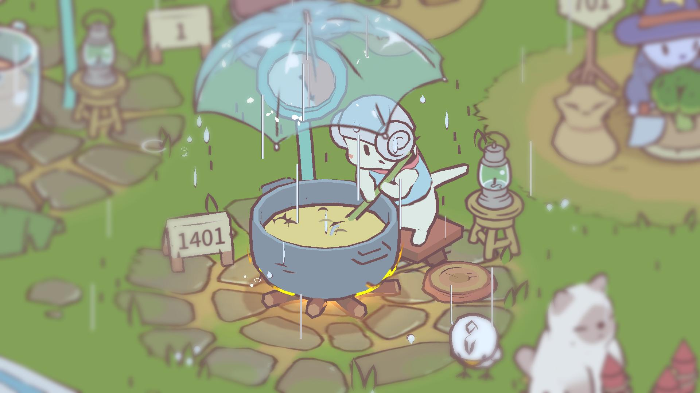
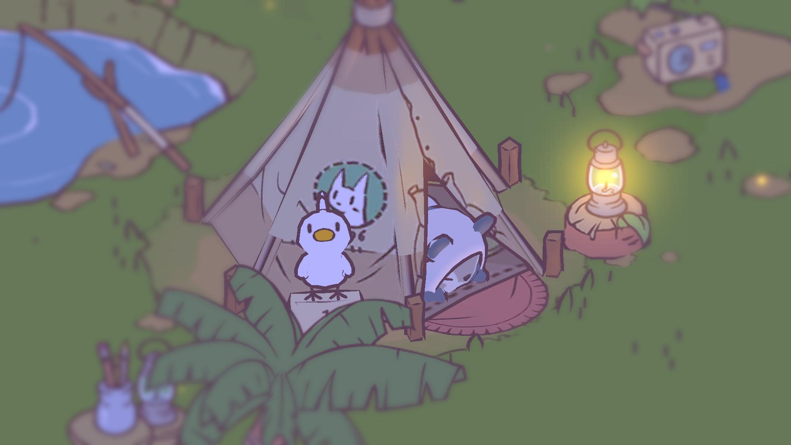
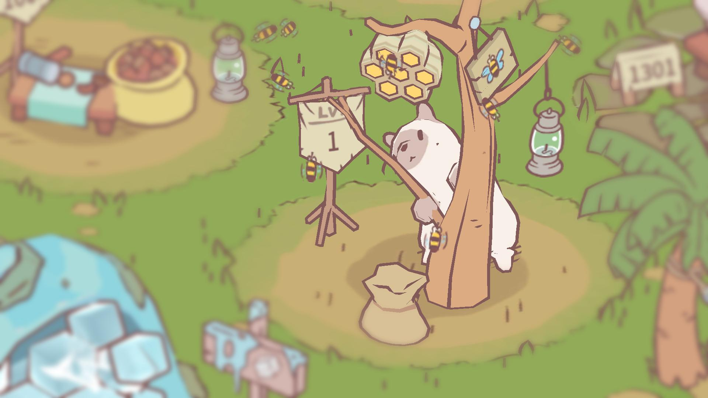

What is Cats & Soup about?

Cats & Soup is exactly as the name implies!
It is an exquisite simulation game where the player takes care of cats and assists them in making delicious soup in an ever-growing land. These dishes are sold in exchange for coins which are then used for decorating the cats’ home and developing the cats’ workplace.
As mundane as it sounds, the game’s simplicity is actually what makes it engaging as it encourages the players to find happiness and pleasure in little things. Just as Isaac Newton said, "Nature is pleased with simplicity." Giving players the opportunity to experience having lovely cats, constant income and custom land, this aesthetically pleasing game is perfect for people who want to take a break from the rigors of life for healing and relaxation.
Who created Cats & Soup?

The game was developed by HIDEA Co., Ltd., a Korean game developer that has been active since 2016. As of 2021, HIDEA's app count is two. Along with their other app called 'Man or Vampire', Cats & Soup is ranked high within Google Play's Top 100 and has been installed by people more than 1 million times.
Contact Developer
Why play Cats and Soup?

The game offers the following:
- hand-drawn graphics;
- soothing background music and sfx;
- easy-to-understand mechanics;
- and manageable quests.
Moreover, the game is also very user-friendly!
Unlike other games that can be quite stressful and exhausting due to level scalings and competition, Cats & Soup is both low maintenance and counter-addictive. It can be played without spending hours on end and does not require the player to turn on their “addict” mode. After all, even if it takes the players two or more days to open the app again, the little cats will remain cute and well, waiting for their owner to take care of them.